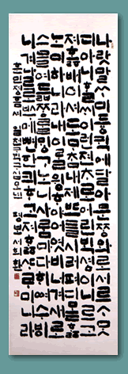

Copy of the Hunmin Chong'um
By Soh, Hwi-hwan, 1995
|
||||||||
|  | ||||||||
|
||||||||
| The
Korean script, han'gul, was invented in the mid 15th century. At that time,
Chinese characters were used in official documents and at court, so han'gul
was invented for the common people, who found Chinese characters too difficult
to learn. Han'gul was used at first mostly by women, but was much popularised
in the late Choson dynasty and today is the main script used in Korea. This
piece was created by the contemporary master calligrapher Soh Hwi-hwan,
and copies the original text of the Hunmin Chong'um, or 'proper sounds to
instruct the people' Copy of the Hunmin Chong'um By Soh, Hwi-hwan, 1995 |
||||||||